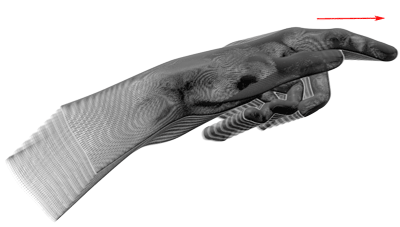

Leap.ScreenTapGesture¶
- class Leap.ScreenTapGesture(*args)¶
The ScreenTapGesture class represents a tapping gesture by a finger or tool.
A screen tap gesture is recognized when the tip of a finger pokes forward and then springs back to approximately the original postion, as if tapping a vertical screen. The tapping finger must pause briefly before beginning the tap.
Important: To use screen tap gestures in your application, you must enable recognition of the screen tap gesture. You can enable recognition with:
controller.enableGesture(Leap.Gesture.Type.TYPE_SCREEN_TAP)
ScreenTap gestures are discrete. The ScreenTapGesture object representing a tap always has the state, STATE_STOP. Only one ScreenTapGesture object is created for each screen tap gesture recognized.
You can set the minimum finger movement and velocity required for a movement to be recognized as a screen tap as well as adjust the detection window for evaluating the movement using the config attribute of a connected Controller object. Use the following keys to configure screen tap recognition:
Key string | Value type | Default value | Units ———–|————|—————|—— Gesture.ScreenTap.MinForwardVelocity | float | 50 | mm/s Gesture.ScreenTap.HistorySeconds | float | 0.1 | s Gesture.ScreenTap.MinDistance | float | 3.0 | mm
The following example demonstrates how to set the screen tap configuration parameters:
if(controller.config.set_float("Gesture.ScreenTap.MinForwardVelocity", 30.0) and controller.config.set_float("Gesture.ScreenTap.HistorySeconds", .5) and controller.config.set_float("Gesture.ScreenTap.MinDistance", 1.0)): controller.config.save()- static class_type()¶
The screen tap gesture type.
Returns: Type The type value designating a screen tap gesture.
- direction¶
- pointable¶
- position¶
- progress¶